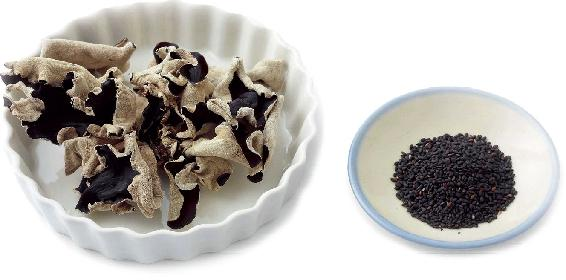
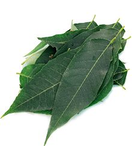
桃仁、李仁都有通便的作用，适合大便十分干燥同时伴有口干的人饮用。如果口干并且总想喝水，可以用李仁；如果口干却又不太想喝水，食欲不好，情绪烦躁，可以用桃仁。
【原料】
桃仁30个、李仁30个、红糖10块。
【做法】
【功效】
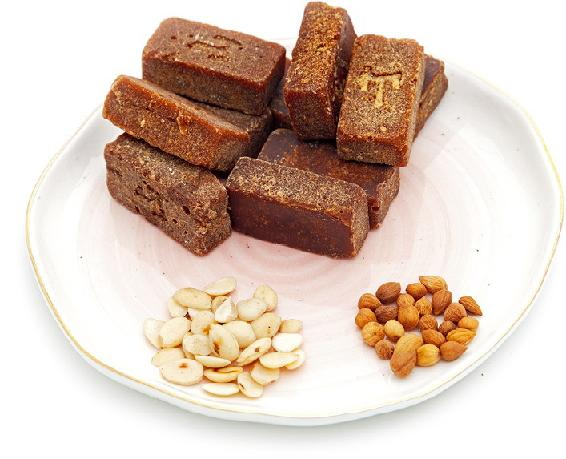
允斌叮嘱
孩子便秘，总是喊口渴又不爱喝水要喝饮料，觉得白开水没有味道。我煮了这个桃李润肠饮给他喝，甜甜的，小孩子也喜欢喝。喝了几天就说不便秘了，可以正常上大号了，也不总是喊口渴了。真的太谢谢老师了！
——读者朋友
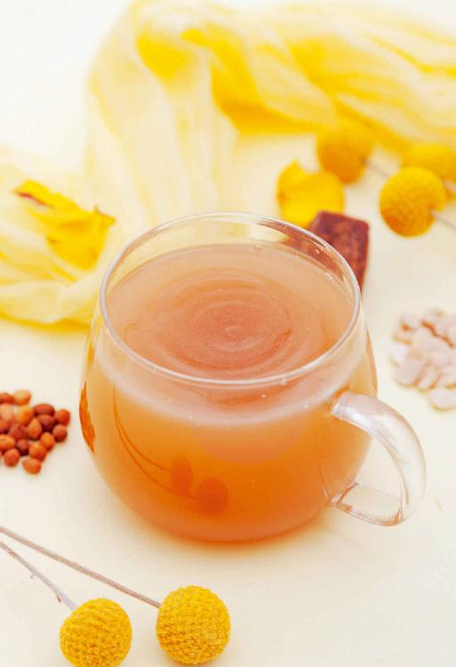
桃仁和李仁对于便秘、哮喘和妇科病都有作用。李仁是活血的，桃仁效果更厉害，是破血的，可以用来调理身体内有瘀血的情况。
桃仁陈皮饮适合大便干结、口干但不想饮水的人，可以通便。
【原料】
桃仁30个、川陈皮5个、红糖10块。
【做法】
【功效】
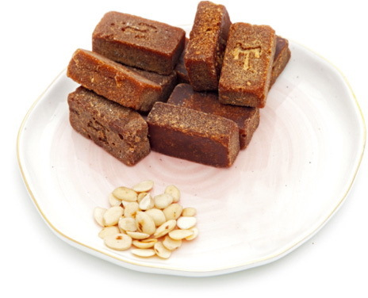
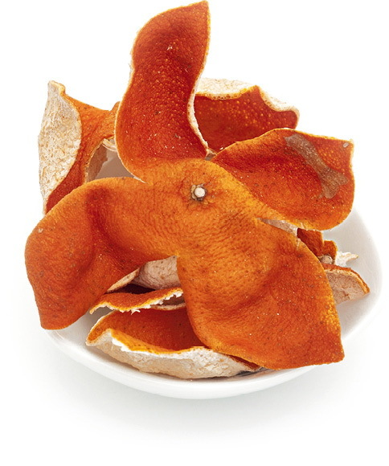
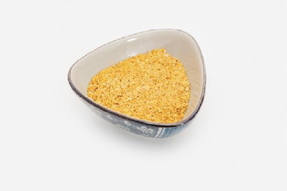
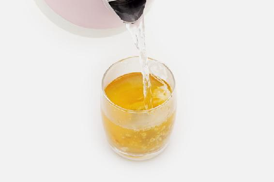
允斌叮嘱
孕妇忌用。
允斌解惑
小不点点问：老师，茶方中祛痘印的桃仁陈皮饮、桃李润肠饮等，不知道十几岁的初高中生能不能用？
允斌答：只要对症就可以用的。
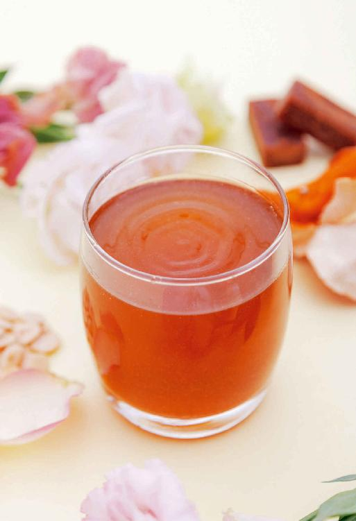
经常遇到一些人被严重便秘困扰，有的人甚至一周不排便，非常苦恼。这种时候可以摸摸肚子，如果感觉硬而胀，很可能与血瘀有关系。可以用一个应急的方法，就是桃花。
看似温柔的桃花，却是一剂猛药。活血、通便的效果相当了得，多数人喝上一杯就能见效。
【原料】
干桃花1克、红糖适量。
【做法】
把桃花和红糖一起放入杯中，沸水冲泡，闷10分钟当茶饮，可以冲泡2遍。
【功效】
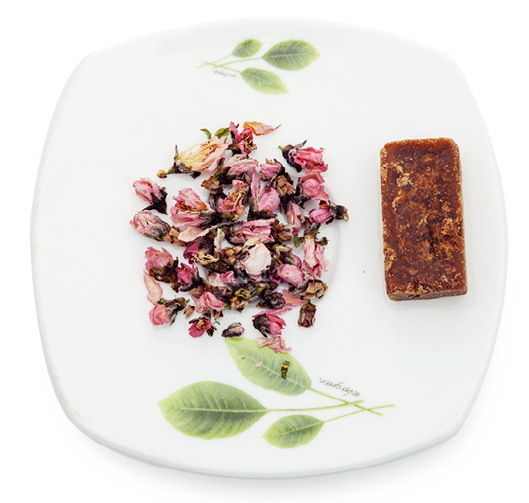
允斌叮嘱
读者评论
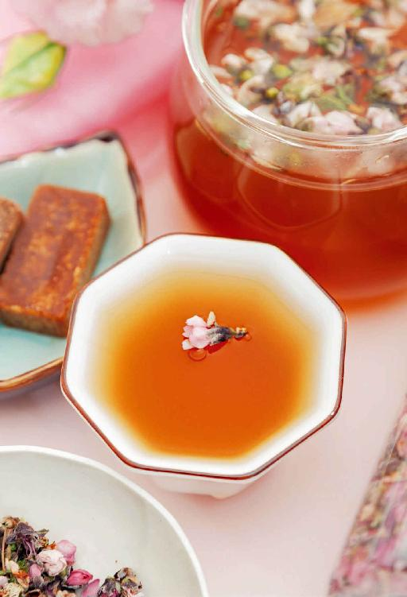
《滇南本草》中记载：“苹果炖膏，名玉容丹，通五脏六腑，走十二经络，调营卫而通神明，解瘟疫而止寒热。”
苹果和梨一样，是很适合煮熟吃的水果，煮熟后只是损失少量维生素C，但其他营养成分更容易吸收了。
【原料】
新鲜芦荟叶500克、苹果250克、鲜柠檬500克、麦芽糖100克、蜂蜜100克。
【做法】
【功效】
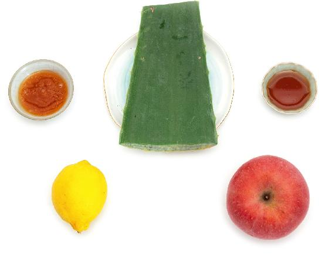
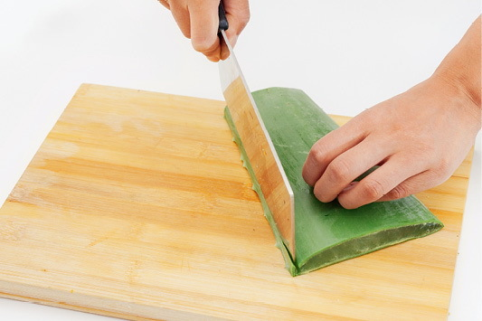
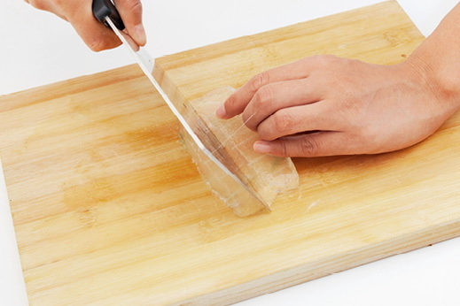
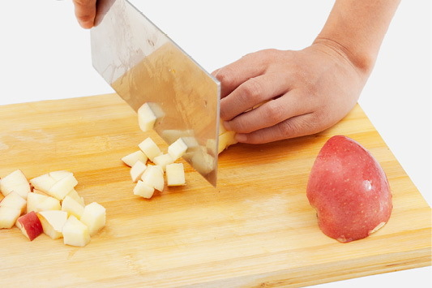
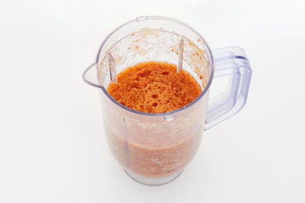
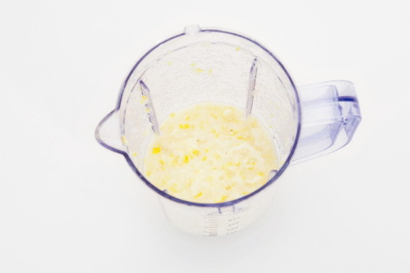
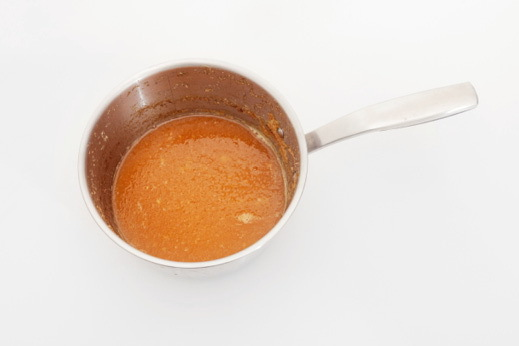
允斌叮嘱
新鲜芦荟叶在一些超市有售。家里自己种植食用品种的芦荟是最方便的。芦荟很容易养活，又耐干旱，几乎不用打理，两三个星期浇一次水就可以。
读者评论
——紫荆花-清远
——雨落幽燕
允斌解惑
AnnC问：能给孩子喝吗？孩子喝的量该如何掌握？
允斌答：可以喝。这些原料都是食物，根据孩子的年龄和平时饮食情况，按照吃零食的量来参照就可以了。
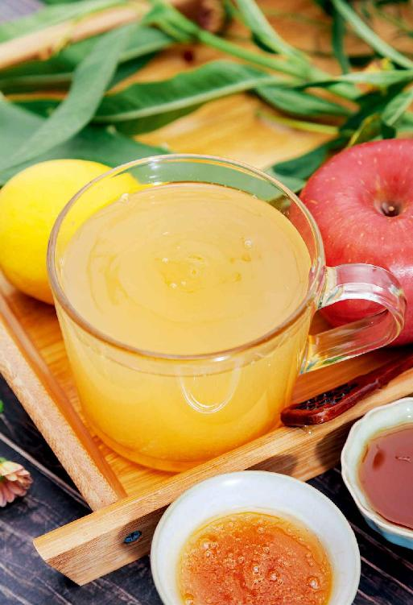
老年人便秘的原因跟年轻人有很大区别，不能滥用清热通便的药物。人老了往往气血不足，气不足造成肠道蠕动无力，血不足造成肠道干燥，所以老年人便秘往往是长期的、习惯性的。
蜂蜜香油水十分温和，不伤身体正气，体虚而又便秘的人也可以使用，特别适用于老年人的脾胃虚弱症。
还有女性产后便秘，如果担心药物的副作用会影响母乳品质，也可以用这个方法来调理。香油还有促进乳汁分泌的作用。
【原料】
蜂蜜1勺、香油1勺。
【做法】
【功效】
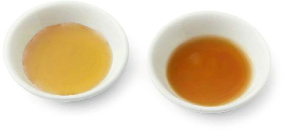
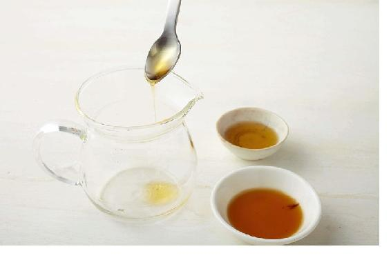
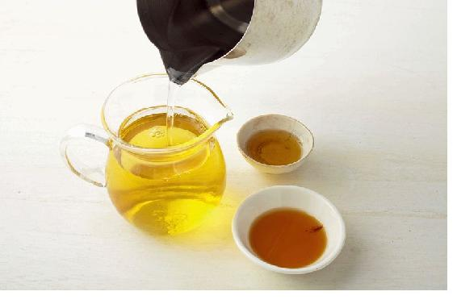
允斌叮嘱
水量最多只要小半杯就够了。水温不要超过40℃，但也不要太低，跟人的体温差不多最好。冰凉的水虽然可以刺激肠胃，有通便的作用，但也伤胃，不适合老年人。
读者评论
——蔚蓝的天空
——一抹温柔
——素人
——28群读者
——小婉
——53群读者
——34群无为
—— 47群 cici
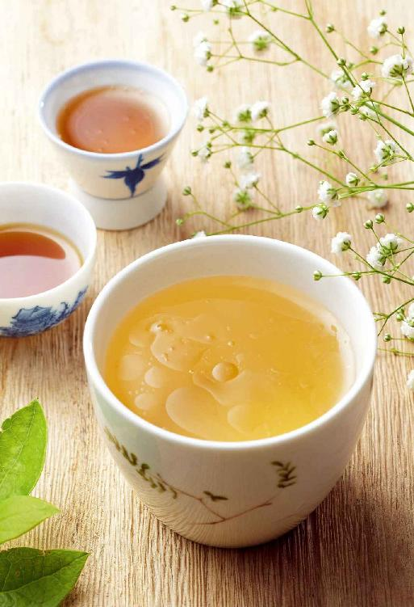
芝麻润肠，木耳化瘀消肿，是适合有痔疮的人常吃的食材。这个茶饮可以防治痔疮引起的大便出血。
【原料】
黑木耳80克、黑芝麻20克。
【做法】
【功效】
痔疮患者保健饮用。
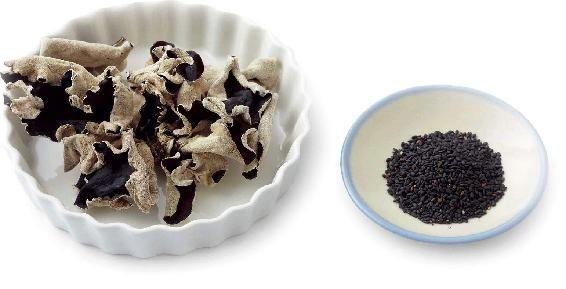
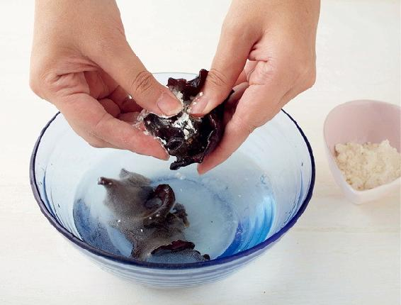
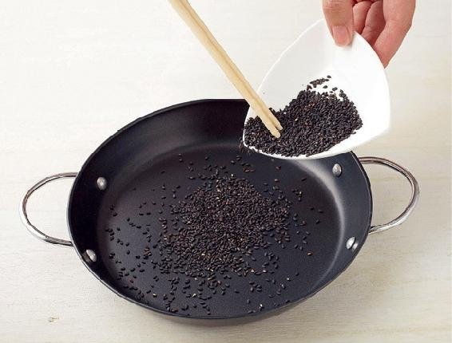
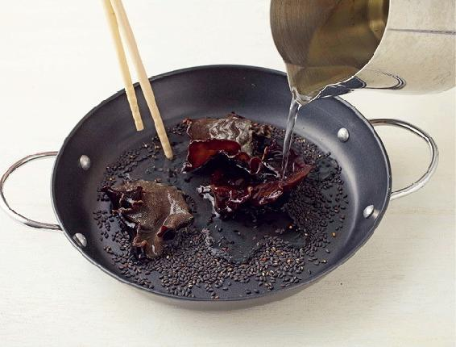
允斌叮嘱
黑木耳在晒干的过程中会沾染灰尘或沙子，使用之前最好用清水加少许面粉搓洗一下。
读者评论
——馨
——健康是福
允斌解惑
枫问：为什么黑木耳一半要炒过，一半不炒？它们在此配方中分别起什么作用？望陈老师百忙中能解此疑问。
允斌答：这个问题问得好。这正是这个方子的绝妙之处。生黑木耳有“化”的作用，可以化瘀消肿；炒到微焦的黑木耳有“收”的作用，可以收敛止血。
这位提问的朋友，对于细节的探究精神非常好。用方子的时候，知其然还要知其所以然，才能够运用自如。
同一种食物，生吃熟吃的功效有区别；用不同的烹调方法来制作，功效也可能不同。关于这方面的详细道理，可以参考《回家吃饭的智慧》里“如何区分食物阴阳性”以及“烹调的智慧”等相关章节。
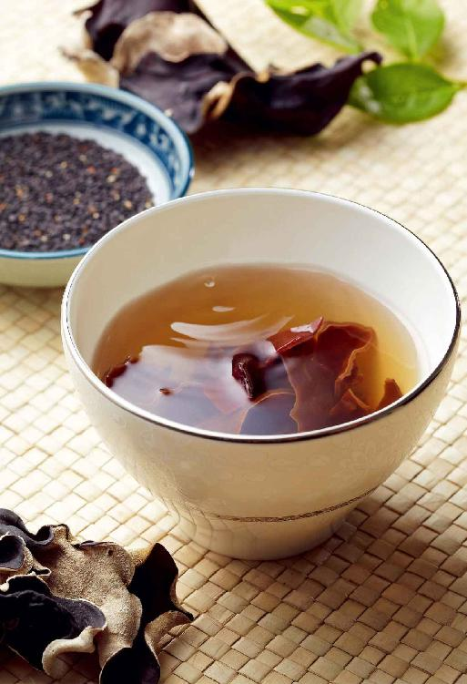
有的人经常觉得肚子胀气，时而便秘，时而拉肚子，不知道如何是好，这时可以喝酸梅汤调理。
炙甘草是用蜜炙过的甘草，吃起来有蜂蜜的甜味，在中药房可以买到。它比生甘草偏补，补气，养脾胃，适合脾胃虚弱、经常感觉疲劳、乏力、心悸的人。
【原料】
乌梅300克、炙甘草60克（经常痰多、消化不良、饮酒者用生甘草）。
【做法】
【功效】
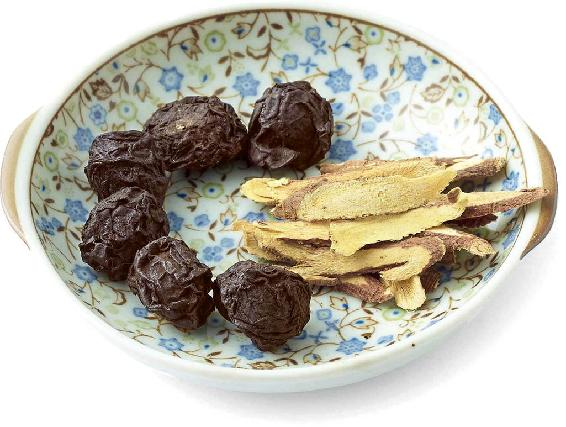
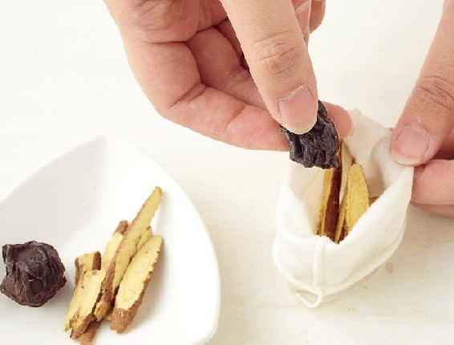
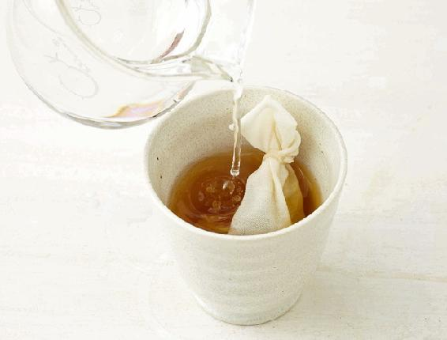
允斌叮嘱
痰多、恶心、消化不良时不要吃炙甘草。特别爱喝酒的人也要少吃炙甘草。可以用生甘草来煮这道茶，加入蜂蜜或罗汉果调味。
读者评论
——暖阳
——玲
——阿毛-湖南
——读者朋友
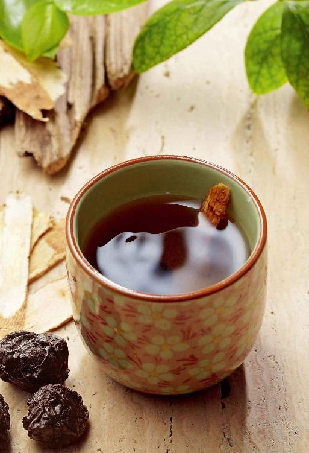
香椿是生发阳气的，对我们的脾胃及肾都有温暖的作用。它能补脾阳，暖胃，消食，也能通肾阳，促进内分泌，有帮助怀孕的作用。
春天过后，香椿芽长成了香椿叶，吃起来不鲜嫩了，可以采摘香椿叶制作小茶方。
春夏季的香椿叶，消炎作用更佳；长到秋季时，降血糖的作用更佳。
【原料】
香椿叶适量。
【做法】
【功效】
预防肠炎。
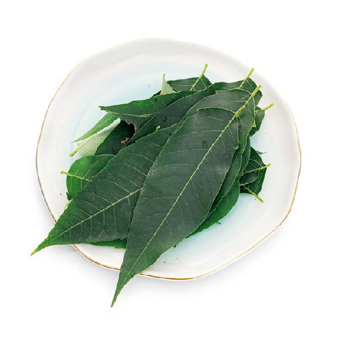
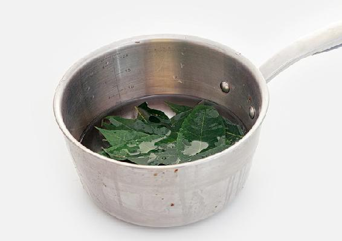
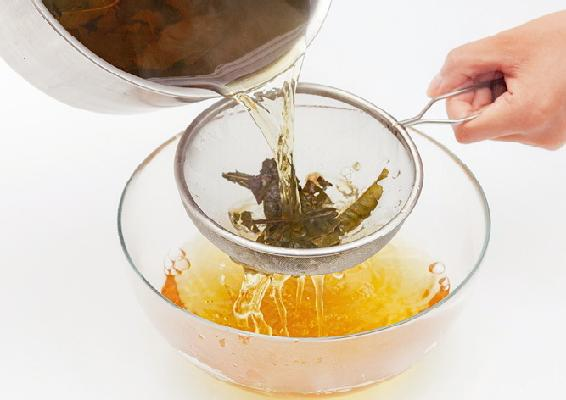
允斌叮嘱
如果您想一年四季都享受到香椿的好处，可以把香椿叶采下来晒干留着，这样常年都可以用香椿叶来保健了。
读者评论
香椿叶介绍给别人用过，是糖尿病，反映效果挺好！香椿籽，我自己用过，咳嗽。
——幽蘭
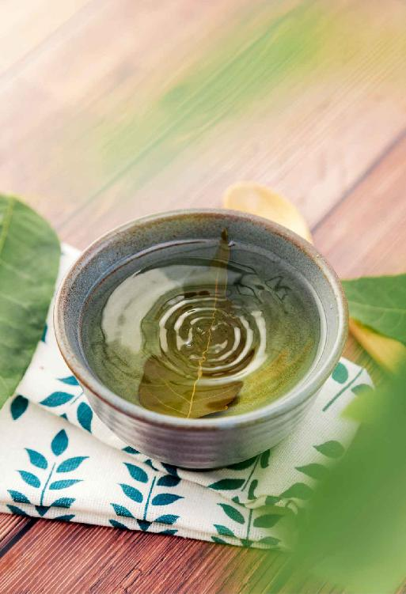